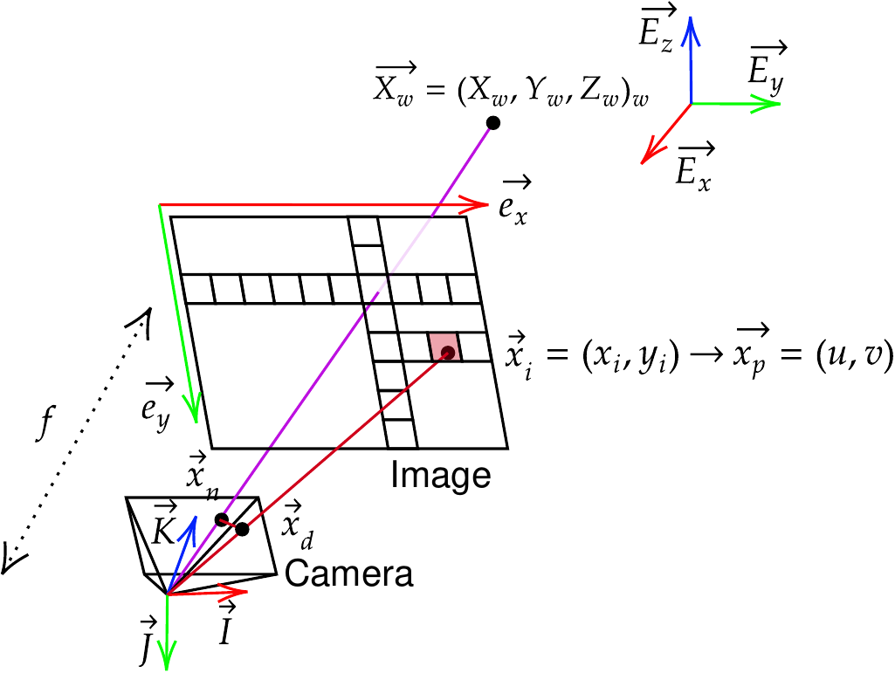

pysdic.Camera#
Camera class#
- class pysdic.Camera(sensor_height, sensor_width, intrinsic=None, distortion=None, extrinsic=None)[source]#
A camera is a structure with :
a sensor size (height and width).
an
Extrinsictransformation.an
Distortiontransformation.an
Intrinsictransformation.
See also
Package
pycvcam(Artezaru/pycvcam) to learn more about the camera model.As described in
pycvcam, the height of the image is along the y-axis and the width of the image is along the x-axis. As described in the figure below, the packagepycvcamuses the following notation:world_points: The 3-D points \(\vec{X}_w\) with shape (…,3) expressed in the world coordinate system \((\vec{E}_x, \vec{E}_y, \vec{E}_z)\).normalized_points: The 2-D points \(\vec{x}_n\) with shape (…,2) expressed in the normalized camera coordinate system \((\vec{I}, \vec{J})\) with a unit distance along the optical axis \((\vec{K})\).distorted_points: The distorted 2-D points \(\vec{x}_d\) with shape (…,2) expressed in the normalized camera coordinate system \((\vec{I}, \vec{J})\) with a unit distance along the optical axis \((\vec{K})\).image_points: The 2-D points \(\vec{x}_i\) with shape (…,2) expressed in the image coordinate system \((\vec{e}_x, \vec{e}_y)\) in the sensor plane.pixel_points: The 2-D points \(\vec{x}_p\) with shape (…,2) expressed in the pixel coordinate system \((u, v)\) in the matrix of pixels.

Definition of quantities in
pycvcam.#To convert the
image_pointsto thepixel_points, a simple switch of coordinate system can be performed. You can use the methodspixel_points_to_image_pointsandimage_points_to_pixel_pointsto perform these conversions.- Parameters:
sensor_height (
Integral) – The height of the camera sensor in pixels.sensor_width (
Integral) – The width of the camera sensor in pixels.intrinsic (Optional[
pycvcam.core.Intrinsic]) – The intrinsic transformation of the camera. Default is None meaning no intrinsic transformation (identity transformation).distortion (Optional[
pycvcam.core.Distortion]) – The distortion transformation of the camera. Default is None meaning no distortion transformation (identity transformation).extrinsic (Optional[
pycvcam.core.Extrinsic]) – The extrinsic transformation of the camera. Default is None meaning no extrinsic transformation (identity transformation).
{kind=link}
Instantiate a Camera object#
To instantiate a Camera object, you need to provide the sensor dimensions (height and width in pixels), the intrinsic parameters (as a pycvcam.Cv2Intrinsic object), the distortion parameters (as a pycvcam.Cv2Distortion object) and the extrinsic parameters (as a pycvcam.Cv2Extrinsic object).
Lets consider a simple OpenCV pinhole camera model without distortion. The intrinsic parameters can be defined from the camera matrix, and the extrinsic parameters from the rotation and translation vectors.
from pycvcam import Cv2Extrinsic, Cv2Intrinsic, Cv2Distortion
from pysdic import Camera
import numpy
rotation_vector = numpy.array([0.1, 0.2, 0.3])
translation_vector = numpy.array([12.0, 34.0, 56.0])
extrinsic = Cv2Extrinsic.from_rt(rotation_vector, translation_vector)
intrinsic = Cv2Intrinsic.from_matrix(
numpy.array([[1000, 0, 320],
[0, 1000, 240],
[0, 0, 1]])
)
camera = Camera(
sensor_height=480,
sensor_width=640,
intrinsic=intrinsic,
distortion=None,
extrinsic=extrinsic,
)
To load the extrinsic, intrinsic and distortion parameters from .json files, you can use the methods write_transform and read_transform from the package pycvcam (Artezaru/pycvcam).
Accessing Camera attributes#
You can access the camera attributes such as sensor dimensions, intrinsic, distortion and extrinsic parameters.
[Get or set] The height of the camera sensor in pixels (\(y\)-axis). |
|
[Get or set] The width of the camera sensor in pixels (\(x\)-axis). |
|
[Get or set] The distortion transformation of the camera. |
|
[Get or set] The extrinsic transformation of the camera. |
|
[Get or set] The intrinsic transformation of the camera. |
|
Get and set the internal bypass mode status. |
Several cameras can have the same transformations (Intrinsic, Distortion, Extrinsic).
Any modification of these transformations will be reflected in all the cameras sharing them.
Warning
If you use the internal_bypass = True feature to avoid checking the consistency of the parameters, the updates methods below must be called manually after any modification of the parameters on a transformations to propagate the changes to the camera.
Called when the camera parameters have changed. |
|
Called when the intrinsic transformation has changed. |
|
Called when the distortion transformation has changed. |
|
Called when the extrinsic transformation has changed. |
|
Called when the sensor size has changed. |
Manipulating Camera objects#
The camera can be used to project 3D points into the 2D image plane and to compute the rays emmited by the camera for each pixel.
|
Convert image points to pixel points. |
Get the |
|
|
Get the |
|
Get the camera rays emitted from the camera sensor to scene in the world coordinate system for each pixel. |
|
Convert pixel points to image points. |
|
Project 3D world points to 2D images points using the camera's intrinsic, extrinsic, and distortion parameters. |
|
Project 3D world points to 2D images points using the camera's intrinsic, extrinsic, and distortion parameters from an |
Visualize 2D Projections#
The Camera class provides a method to visualize the 2D projection of 3D points onto the image plane.
Visualize the projected 2D points of a |
|
|
Visualize the projected 2D mesh of a |
Usage#
Creating a camera with only intrinsic and extrinsic transformations:
import numpy
from pysdic import Camera
from pycvcam import Cv2Extrinsic, Cv2Intrinsic
rotation_vector = numpy.array([0.1, 0.2, 0.3])
translation_vector = numpy.array([12.0, 34.0, 56.0])
extrinsic = Cv2Extrinsic.from_rt(rotation_vector, translation_vector)
intrinsic = Cv2Intrinsic.from_matrix(
numpy.array([[1000, 0, 320],
[0, 1000, 240],
[0, 0, 1]])
)
camera = Camera(
sensor_height=480,
sensor_width=640,
intrinsic=intrinsic,
extrinsic=extrinsic,
)
To project 3D points into the 2D image plane, you can use the project() method.
points_3d = numpy.array([[0, 0, 0],
[1, 1, 1],
[2, 2, 2]]) # world_points with shape (N, 3)
result = camera.project(points_3d)
image_points = result.image_points
Warning
image_points are expressed in the (x,y) coordinate system and not as pixel_points in the (u,v) coordinate system.
You can also access the jacobian of the projection (dx, dintrinsic, ddistortion, dextrinsic).
result = camera.project(points_3d, dintrinsic=True) # Compute also the jacobian of the projection with respect to the intrinsic parameters
image_points = result.image_points
jacobian = result.jacobian_dintrinsic
For reverse transformation, you can construct the rays emmited by the camera for each pixel by using the get_camera_rays() method.
A mask with shape (height, width) can be used to filter the rays.
To construct the rays for any 2D image points, you can use the package pycvcam (Artezaru/pycvcam) and the method compute_rays.
rays = camera.get_camera_rays(mask=mask)
origins = rays[0][:, :3] # shape (N, 3)
directions = rays[1][:, 3:] # shape (N, 3)